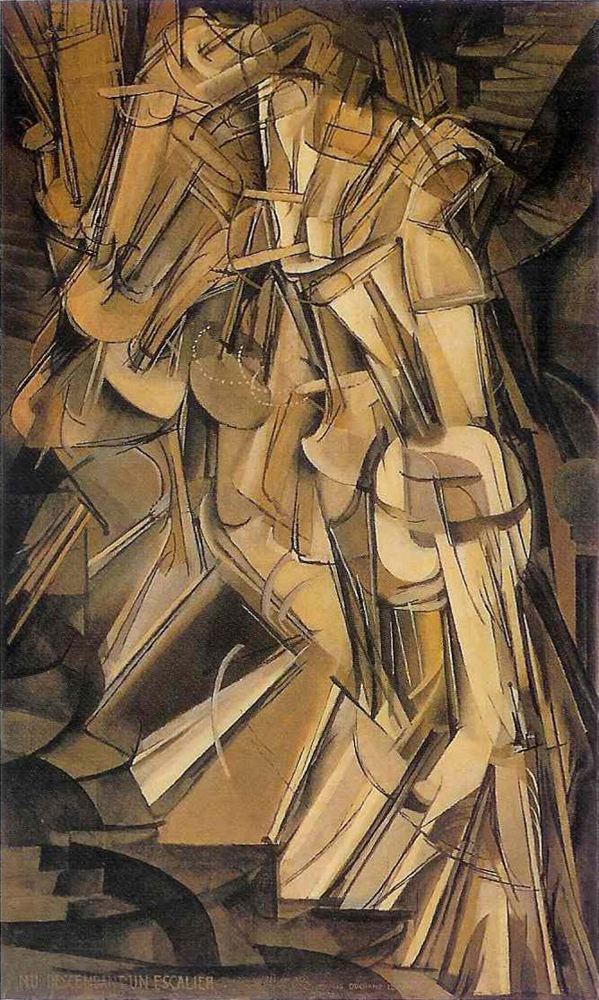
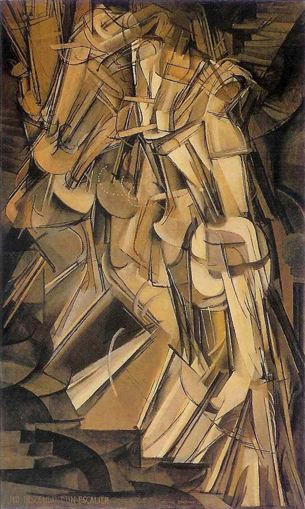

I particularly liked The Miseducation of the Doodle.
Section 6, which discussed shading and shadowing showed me how simple adding depth cues could be. I decided to try it out myself in my sketchbook. I also like the visual alphabet toolbox. For the "Doodle" set below, my roommate like all of my doodles, except for 4, 5, and 12. He did not like 4 and 5, because he thinks that they look too much like apes hands, because their is nothing to orient him to their anthromorphism. He didn't like 12, because it is kind of like a blob, which doesn't necessarily point to a particular shape. I also did not like 12, because I lacked a clear focus and ended up drawing seemingly random paths and filling in everything with blue.
For other set on the right, my roommate did not like 2, 4, and 12, because they didn't have the same inviting shading on the lines, so they were rougher and not as welcoming.
Please click on the following images to enlarge them.
I first saw this video in a class at Carnegie Mellon called the Roots of Rock and Roll. Back then we saw it in the context of how blues, jazz, rock and roll, folk, etc came about through various people influenceing each other. It makes sense to me, because I've had many portions of my life when I've hidden away in an introverted cave and I've found that the more I limit myself from external input, the more my ideas and aspirations are limited. Even when I do something that is idiosyncratic, it is based in real experiences that I have had in my past. As I get older, I know more people who I can directly list as inspirations for projects I would like to do in the future. My family sometimes would ask me whether the things I am doing are new. Sheepishly, I would pretend to myself that they are new, but inside I knew that I was just repeating the work of giants that have come before my time. I would sometimes feel ashamed, because I can't do amazing work, unless I go through the process of remaking awesome things that others have invented before me. To improve my proccess, I would like to incorporate more dedicated external reading time to my life.
This movie was a wild ride. Mister Brainwash seemed to be a somewhat irresponsible person, because he was ignoring his family for the majority of the film, but his wife seemed to be way too understanding. I think that the movie is a tad bit ridiculous, since Thierry just happens to have a cousin who is a street artist, and he just happens to be extremely good at getting people to trust him. Shepard Fairey seems to be a bit too accomodating of Thierry, because Thierry was turrning on lights and climbing around. I found it unrelatable that Thierry desired a sense of danger so much that he would travel with street artists up to roof tops. The final scene when Thierry puts together his own art show was crazy. I can't believe someone could tack together a bunch of art by directing a team of creators and manage to convince a bunch of paying customers to view it. I still don't understand the economics of the Art industry, since people are willing to pay for ramshakle visual objects, but less willing to pay for computer games. I think that for my own work, even if this documentary is a bit contrived, is that I should try to find the audience of people who are willing to pay for my work and put forth a good faith effort to provide the public with the opportunity to pay for it. I also see how sometimes it is more important to just go out and do things, rather than contemplating them too much.
I didn't read the book, but I watched a TED Talk by Austin Kleon. This TED talk didn't seem to provide me with terribly much new insight, beyond the confirmation that ideas have lineages. I also thought that it would be a bit tedious to physically black out an entire newspaper. Yet again, I am thinking that I should incorporate more external feeds of information into my life.
I did some research on the life, work, and proccess of Marcel Duchamp. Evidently he was more influencial that I thought and he pioneered discussion about what constitutes an art object. He famously presented a urinal at an exhibition and entitled it "Fountain". My favorite of Duchamp's work is his Nude paintings that depict figures at diffferent points in time while performing a movement.
 

I love the walking nudes, since they present a means of depicting change in time in a static still framed image. It seems that Duchamp was rather intellectually motivated and thought in terms of how creations may provide cerebral benifits, rather than purely visible inputs to human eyeballs. He continued pursuing his childhood interests, such as chess playing throughout his life. I was impressed by how he managed to pay the bills by working as a library, while also therebye finding time to learn about things that interest him. In my life, I would like to learn how to be okay with the learnings I am doing in the present and push off various types of future learnings to the future, without worrying about them. I like that he understood the existance of science as an ideology of consistant understanding between people, and he made a similar leap as I have when he doesn't worry about how his work and actions are interpreted, because truth is constructed as a team exercise between participants. I used to think that Math was truth, but I then realized that math is argument. I've been in the throngs of modernist teachings back in Computer Science School and was in a deep relationship with abstractions, where I saught to abstract myself away and the environment of our lives. At the same time, I desired intimacy, to break through the boundaries of abstraction that seperate us. I feel like Duchamp might have felt similar, where he liked both mathematics and artmaking and had to reconcile influences coming from different parts of his life.
It looks like DJ spooky travels for inspiration and maps his electronics onto his experiences.